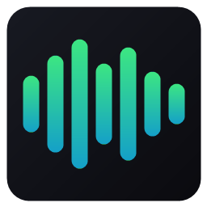

Spotify Overlay
A tiny see-through now-playing widget for Windows.
Free · Windows 10 (2004+) or 11 · needs the Spotify desktop app
What it does
- Shows the song, album art, progress and a clock on a transparent card that stays on top.
- Visualizer that listens to only Spotify, in eight styles you can flip, recolor and tune.
- Synced lyrics with your choice of font, size, color and animation.
- Playback buttons, click-to-seek, and a volume slider that controls Spotify only.
- Full, compact strip or visualizer-only layouts. Remembers where you put it.
- A full-screen "now playing" mode (F11) for when music is all you're doing.
Install
- Download and run the installer.
- If Windows says "Windows protected your PC", click More info, then Run anyway (the installer isn't code-signed).
- Open Spotify and play a song. Hover the card and click ⚙ for settings.
Source code
Everything is open: github.com/bv8dpwfzrj-sudo/spotify-overlay